<!DOCTYPE lake>
<h2 data-lake-id="iqd6P" id="iqd6P"><span data-lake-id="u213008cf" id="u213008cf">Python环境安装</span></h2><p data-lake-id="u3f9296ec" id="u3f9296ec"><span data-lake-id="ue51c4cee" id="ue51c4cee">Python官网:</span><a data-lake-id="u494772f1" href="https://www.python.org/" id="u494772f1" rel="noopener noreferrer" target="_blank"><span data-lake-id="ude2aac13" id="ude2aac13">https://www.python.org/</span></a></p><ol list="ue2212aef"><li data-lake-id="u810e2f4a" fid="u0f325a3d" id="u810e2f4a"><span data-lake-id="ud8b27d27" id="ud8b27d27">选择</span><strong><span data-lake-id="ucc44ab12" id="ucc44ab12">Python3.x</span></strong><span data-lake-id="u5fc82750" id="u5fc82750">版本下载，建议使用稳定版</span><code data-lake-id="u67811559" id="u67811559"><span data-lake-id="u78568f93" id="u78568f93">3.9.13</span></code><span data-lake-id="u706afa49" id="u706afa49">（Stable Releases），绝大数库对3.9版本Python已良好支持，但对3.10及以上支持不完全：</span></li></ol><p data-lake-id="u39c45130" id="u39c45130" style="text-indent: 2em"><a data-lake-id="ue3bbe0bd" href="https://www.python.org/ftp/python/3.9.13/python-3.9.13-amd64.exe" id="ue3bbe0bd" rel="noopener noreferrer" target="_blank"><span data-lake-id="u9ff4a7f0" id="u9ff4a7f0">https://www.python.org/ftp/python/3.9.13/python-3.9.13-amd64.exe</span></a></p><ol list="ue2212aef" start="2"><li data-lake-id="udfd4c6b1" fid="u0f325a3d" id="udfd4c6b1"><span data-lake-id="u66a0a2af" id="u66a0a2af">安装Python（记得勾选Add python.exe to PATH）</span></li></ol><p data-lake-id="uf14d0190" id="uf14d0190">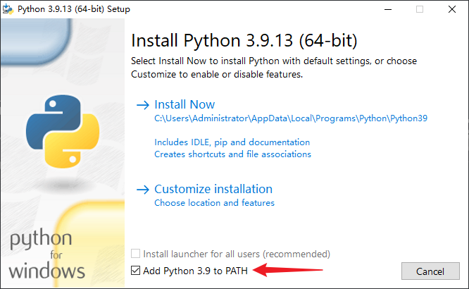</p><ol list="ue2212aef" start="3"><li data-lake-id="u7d88a5d1" fid="u0f325a3d" id="u7d88a5d1"><span data-lake-id="uab8860cf" id="uab8860cf">验证是否安装成功打开命令行输入如下命令查看python版本号，</span><code data-lake-id="u32ef0b34" id="u32ef0b34"><span data-lake-id="u50ba941f" id="u50ba941f">Win+R</span></code><span data-lake-id="ufadab2e6" id="ufadab2e6">输入cmd打开控制台，输入如下命令后按回车键。</span></li></ol><span class="yuque-card-unsupported">[codeblock]</span><p data-lake-id="ub6aefdbb" id="ub6aefdbb"><span data-lake-id="u38715da3" id="u38715da3">如果出现版本号说明安装成功</span></p><p data-lake-id="u8d5ed9fe" id="u8d5ed9fe">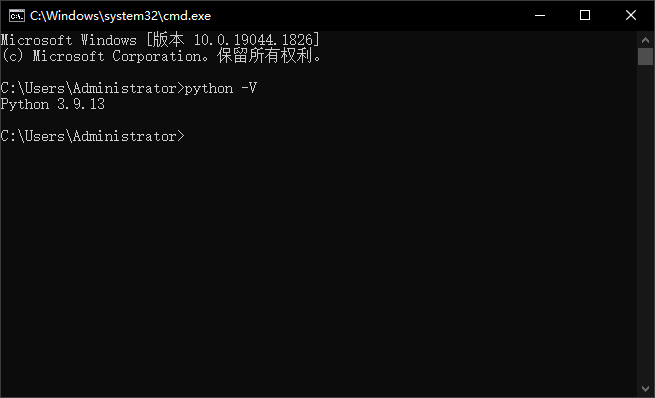</p><p data-lake-id="ue2a49980" id="ue2a49980"><br/></p><p data-lake-id="uaf318820" id="uaf318820"><span data-lake-id="u9c3aafac" id="u9c3aafac">如果没有正常显示版本号，请关闭重开控制台。还不行再重新安装，并勾选</span><code data-lake-id="uad2f4dfa" id="uad2f4dfa"><span data-lake-id="uf7c85e26" id="uf7c85e26">Add python.exe to PATH</span></code></p><p data-lake-id="uf451745a" id="uf451745a"><span data-lake-id="ub1136f36" id="ub1136f36">​</span><br/></p><p data-lake-id="ud8b3350a" id="ud8b3350a"><span data-lake-id="u50af79b6" id="u50af79b6">如果电脑之前装过Python则将环境变量中的Python的优先级调高（高于别	的版本等级即可）</span></p><p data-lake-id="uce769c81" id="uce769c81">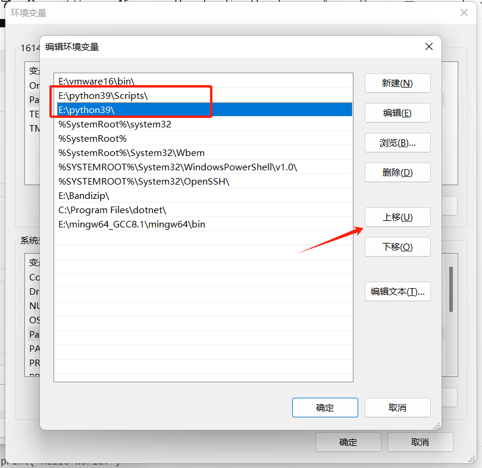</p><h2 data-lake-id="Fnw1J" id="Fnw1J"><span data-lake-id="ueb8f2b70" id="ueb8f2b70">第一个python程序</span></h2><p data-lake-id="u21e4dad5" id="u21e4dad5"><span data-lake-id="u8192ef17" id="u8192ef17">创建</span><code data-lake-id="u8363cab9" id="u8363cab9"><span data-lake-id="u3e97a6c9" id="u3e97a6c9">hello.py</span></code><span data-lake-id="ud0370b77" id="ud0370b77">文件,输入如下内容:</span></p><span class="yuque-card-unsupported">[codeblock]</span><p data-lake-id="u0aa64e65" id="u0aa64e65"><span data-lake-id="ub9f5d695" id="ub9f5d695">在文件所在目录空白处，按住Shift+鼠标右键，点</span><code data-lake-id="u3caaac12" id="u3caaac12"><span data-lake-id="u8e5091b7" id="u8e5091b7">在此处打开Powershell窗口</span></code></p><p data-lake-id="uff0d3da2" id="uff0d3da2">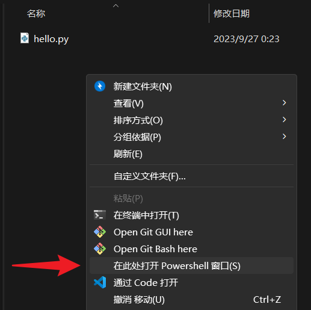</p><p data-lake-id="uf805a38d" id="uf805a38d"><span data-lake-id="u1dad02ef" id="u1dad02ef">输入</span><code data-lake-id="u51c5ca73" id="u51c5ca73"><span data-lake-id="u231af830" id="u231af830">python hello.py</span></code><span data-lake-id="uccee021e" id="uccee021e">后按回车，输出如下内容:</span></p><p data-lake-id="ub3de3d9c" id="ub3de3d9c">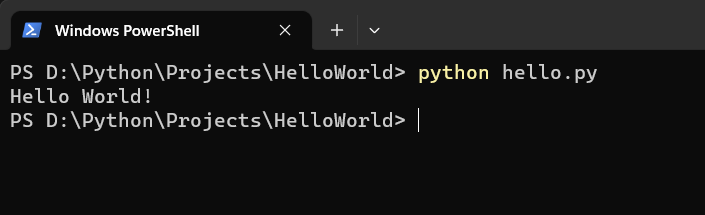</p><h2 data-lake-id="GU2MP" id="GU2MP"><span data-lake-id="u74271ddc" id="u74271ddc">下载VSCode</span></h2><p data-lake-id="u1b3a3d3a" id="u1b3a3d3a"><span data-lake-id="u3e243393" id="u3e243393">VSCode官方首页：</span><a data-lake-id="u22f1c098" href="https://code.visualstudio.com/" id="u22f1c098" rel="noopener noreferrer" target="_blank"><span data-lake-id="u57c0356f" id="u57c0356f">https://code.visualstudio.com/</span></a><span data-lake-id="ub75c2681" id="ub75c2681"> 点击</span><code data-lake-id="u91cd6a09" id="u91cd6a09"><span data-lake-id="u88290a24" id="u88290a24">Download for Windows</span></code><span data-lake-id="u33424b76" id="u33424b76">下载</span></p><p data-lake-id="u41eb97c1" id="u41eb97c1">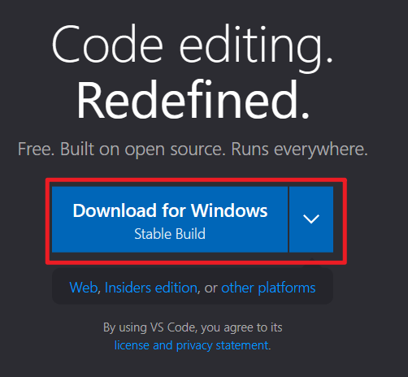</p><p data-lake-id="uf172f889" id="uf172f889"><span data-lake-id="u292d67b4" id="u292d67b4">安装过程一路下一步即可，其中建议勾选 </span><code data-lake-id="ua660e2a8" id="ua660e2a8"><span data-lake-id="ue09c8772" id="ue09c8772">将"通过Code打开"操作添加到Windows资源管理器目录上下文菜单</span></code><span data-lake-id="u04cd71e7" id="u04cd71e7">方便我们直接通过目录右键打开VSCode工程</span></p><p data-lake-id="u0ced0353" id="u0ced0353">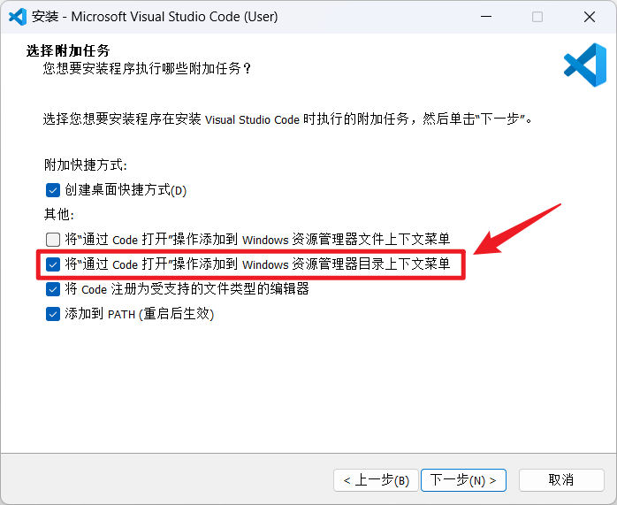</p><h2 data-lake-id="uvtQR" id="uvtQR"><span data-lake-id="u72e16630" id="u72e16630">推荐插件</span></h2><h3 data-lake-id="g1lxP" id="g1lxP"><span data-lake-id="ue9bfc319" id="ue9bfc319">必装</span></h3><ul list="u5e40035f"><li data-lake-id="u9791e2f5" fid="u1c730784" id="u9791e2f5"><code data-lake-id="u0c516c15" id="u0c516c15"><span data-lake-id="u231df76e" id="u231df76e">Python</span></code><span data-lake-id="u3587d695" id="u3587d695"> python语言支持</span></li><li data-lake-id="u26a08c59" fid="u1c730784" id="u26a08c59"><code data-lake-id="u5f522c1b" id="u5f522c1b"><span data-lake-id="u3e443e15" id="u3e443e15">Python Extension Pack </span></code><span data-lake-id="u16040877" id="u16040877">集成分析、高亮、规范等的插件包，主要包含</span></li></ul><ul data-lake-indent="1" list="u5e40035f"><li data-lake-id="u8335d5e7" fid="u2ff6bb19" id="u8335d5e7"><span data-lake-id="u8d75b362" id="u8d75b362">Python 开发环境支持</span></li><li data-lake-id="u4daa8cf7" fid="u2ff6bb19" id="u4daa8cf7"><span data-lake-id="ud1c32b29" id="ud1c32b29">autoDocstring	文档注释生成</span></li><li data-lake-id="uae9940f8" fid="u2ff6bb19" id="uae9940f8"><span data-lake-id="uede60746" id="uede60746">Python Indent	缩进辅助</span></li><li data-lake-id="u5f4a0c6f" fid="u2ff6bb19" id="u5f4a0c6f"><span data-lake-id="u32ac66a7" id="u32ac66a7">IntelliCode 智能提示助手</span></li><li data-lake-id="u66566f56" fid="u2ff6bb19" id="u66566f56"><span data-lake-id="u30ad359b" id="u30ad359b">Python Environment Manager 环境管理器</span></li></ul><ul list="u5e40035f" start="3"><li data-lake-id="ue9f95d8f" fid="u1c730784" id="ue9f95d8f"><code data-lake-id="u3b940efa" id="u3b940efa"><span data-lake-id="u9668377d" id="u9668377d">PYQT Integration</span></code><span data-lake-id="u47597e33" id="u47597e33"> PyQt开发辅助插件</span></li><li data-lake-id="u2163116f" fid="u1c730784" id="u2163116f"><code data-lake-id="u4ec78b5f" id="u4ec78b5f"><span data-lake-id="ud845a5e0" id="ud845a5e0">Black Formatter</span></code><span data-lake-id="uc03c9d81" id="uc03c9d81"> Python格式化工具</span></li><li data-lake-id="u8b000b41" fid="u1c730784" id="u8b000b41"><code data-lake-id="u0817573d" id="u0817573d"><span data-lake-id="uc607bf74" id="uc607bf74">Code Runner</span></code><span data-lake-id="u356f3adc" id="u356f3adc">通用方便的代码运行工具</span></li><li data-lake-id="uf50c6b5e" fid="u1c730784" id="uf50c6b5e"><code data-lake-id="u566473e0" id="u566473e0"><span data-lake-id="u1021dd48" id="u1021dd48">Chinese (Simplified) </span></code><span data-lake-id="u3e4465a4" id="u3e4465a4">简体中文插件</span></li></ul><h2 data-lake-id="mQyeN" id="mQyeN"><span data-lake-id="u749b6fab" id="u749b6fab">必选配置</span></h2><h3 data-lake-id="KpnHk" id="KpnHk"><span data-lake-id="u1cd44d8d" id="u1cd44d8d">勾选Run in Terminal(可以不用配置)</span></h3><p data-lake-id="u4e5dca53" id="u4e5dca53"><code data-lake-id="u7760e95a" id="u7760e95a"><span data-lake-id="u79bbb3d3" id="u79bbb3d3">Ctrl+,</span></code><span data-lake-id="u4fcba199" id="u4fcba199">打开设置（确保已安装Code Runner插件），搜索</span><code data-lake-id="u1b32cf46" id="u1b32cf46"><span data-lake-id="u9c3729bc" id="u9c3729bc">code run in</span></code><span data-lake-id="u72344169" id="u72344169">，勾选</span><code data-lake-id="u9414d45c" id="u9414d45c"><span data-lake-id="u431bbe9e" id="u431bbe9e">Run In Terminal</span></code></p><p data-lake-id="u62d34368" id="u62d34368">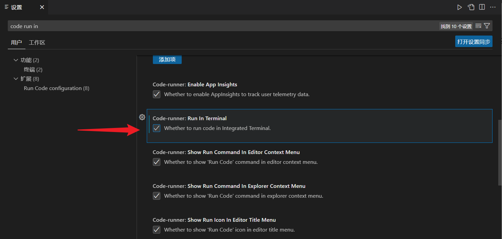</p><h3 data-lake-id="iCL5t" id="iCL5t"><span data-lake-id="u21f26c92" id="u21f26c92">在文件目录运行代码</span></h3><p data-lake-id="u2f131bb1" id="u2f131bb1"><code data-lake-id="u33ce9876" id="u33ce9876"><span data-lake-id="u504d7b7e" id="u504d7b7e">Ctrl+,</span></code><span data-lake-id="uc9d0c8c3" id="uc9d0c8c3">打开设置（确保已安装Python插件），搜索</span><code data-lake-id="uf28c11cd" id="uf28c11cd"><span data-lake-id="ufa5bf9e3" id="ufa5bf9e3">execute</span></code><span data-lake-id="u7adbc1c8" id="u7adbc1c8">，勾选</span><code data-lake-id="uf122a98e" id="uf122a98e"><span data-lake-id="u845acc0f" id="u845acc0f">Execute in File Dir</span></code></p><p data-lake-id="ud6b367ce" id="ud6b367ce">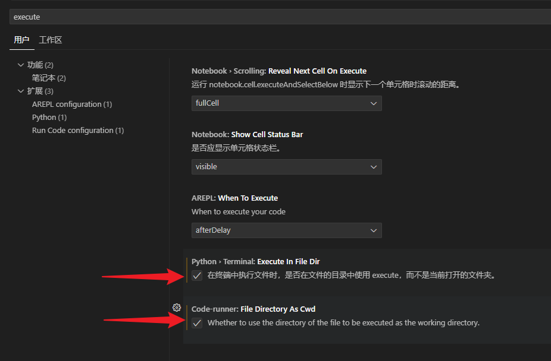</p><h3 data-lake-id="sKn62" id="sKn62"><span data-lake-id="ua15bfbe6" id="ua15bfbe6">自动猜测编码(可以不用配置)</span></h3><ul list="u074feff1"><li data-lake-id="u65ccf808" fid="u98d5d87c" id="u65ccf808"><span data-lake-id="uce4c2066" id="uce4c2066">打开设置</span><code data-lake-id="u5b1d9032" id="u5b1d9032"><span data-lake-id="u34ae0e43" id="u34ae0e43">Ctrl + ,</span></code></li><li data-lake-id="u2b000479" fid="u98d5d87c" id="u2b000479"><span data-lake-id="u6091df91" id="u6091df91">勾选</span><code data-lake-id="uca89e11f" id="uca89e11f"><span data-lake-id="ua2dbb7b6" id="ua2dbb7b6">Auto Guess Encoding</span></code></li></ul><p data-lake-id="u65835e91" id="u65835e91">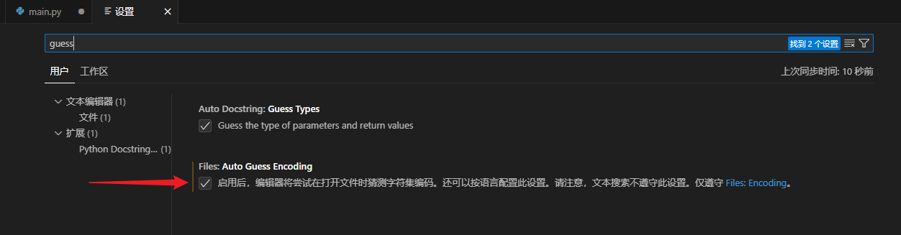</p><h3 data-lake-id="jq4Q2" id="jq4Q2"><span data-lake-id="u21f5dda1" id="u21f5dda1">设置新建文件编码</span></h3><ul list="u47ebf464"><li data-lake-id="u67015c9f" fid="u98d5d87c" id="u67015c9f"><span data-lake-id="ud232e5fe" id="ud232e5fe">打开设置</span><code data-lake-id="uaf0dbd62" id="uaf0dbd62"><span data-lake-id="u60268262" id="u60268262">Ctrl + ,</span></code></li><li data-lake-id="u923a6871" fid="u98d5d87c" id="u923a6871"><span data-lake-id="u09d40f6c" id="u09d40f6c">搜索</span><code data-lake-id="u60eaa606" id="u60eaa606"><span data-lake-id="u95677549" id="u95677549">Encoding</span></code></li><li data-lake-id="ud7f27495" fid="u98d5d87c" id="ud7f27495"><span data-lake-id="u0caba122" id="u0caba122">选择</span><code data-lake-id="ua8a2f6c4" id="ua8a2f6c4"><span data-lake-id="u45b39b5f" id="u45b39b5f">Files: Encoding</span></code><span data-lake-id="uc58caf2f" id="uc58caf2f">为</span><code data-lake-id="ub59d2b03" id="ub59d2b03"><span data-lake-id="u61ee8fca" id="u61ee8fca">UTF-8</span></code></li></ul><p data-lake-id="u98cb83e3" id="u98cb83e3">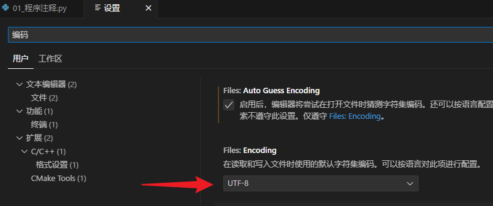</p><h2 data-lake-id="eS84h" id="eS84h"><span data-lake-id="u1376da99" id="u1376da99">可选配置</span></h2><h3 data-lake-id="uILyq" id="uILyq"><span data-lake-id="u4b050b26" id="u4b050b26">文件自动保存</span></h3><ul list="u96ea1410"><li data-lake-id="u24f088e0" fid="u690f993b" id="u24f088e0"><span data-lake-id="ua3d80d6b" id="ua3d80d6b">文件 -&gt; 勾选</span><code data-lake-id="uddea884b" id="uddea884b"><span data-lake-id="ubbcd2c1d" id="ubbcd2c1d">自动保存</span></code></li></ul><p data-lake-id="uf84ae3ba" id="uf84ae3ba">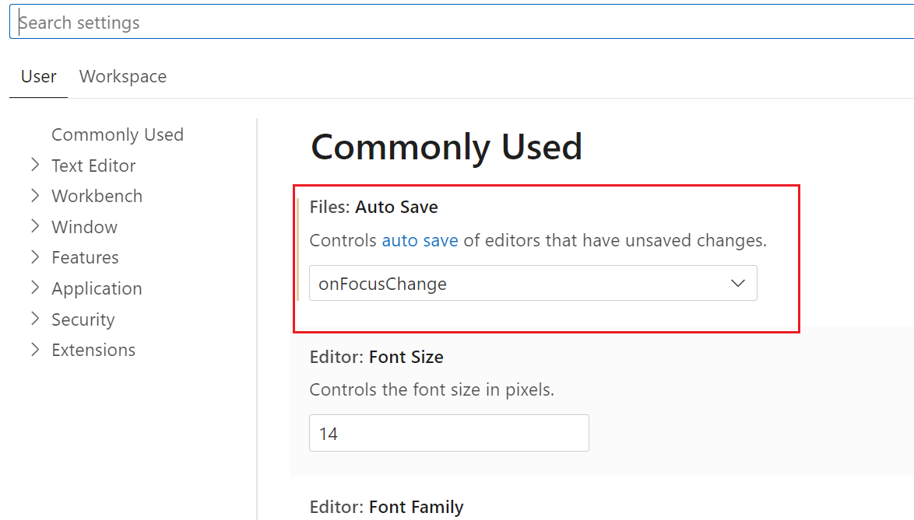</p><h3 data-lake-id="J2sTk" id="J2sTk"><span data-lake-id="u0a5fd8c7" id="u0a5fd8c7">修改字号字体(可以先不用配置)</span></h3><p data-lake-id="u9a943aa2" id="u9a943aa2"><span data-lake-id="uaef0a7aa" id="uaef0a7aa">搜索：</span><code data-lake-id="u41aefa67" id="u41aefa67"><span data-lake-id="u5dfe6519" id="u5dfe6519">Editor: font</span></code></p><p data-lake-id="u5d09d812" id="u5d09d812"><span data-lake-id="ufad09ad4" id="ufad09ad4">打开设置</span><code data-lake-id="u3752fe99" id="u3752fe99"><span data-lake-id="ue98797aa" id="ue98797aa">Ctrl + ,</span></code><span data-lake-id="ucbba595b" id="ucbba595b"> 修改Font Size为</span><code data-lake-id="uc5c31728" id="uc5c31728"><span data-lake-id="u44470e9e" id="u44470e9e">16</span></code><span data-lake-id="u268588cc" id="u268588cc">，修改字体为</span><code data-lake-id="u11b79281" id="u11b79281"><span data-lake-id="ueb66dd49" id="ueb66dd49">consolas, '微软雅黑', monospace</span></code></p><p data-lake-id="u3f7cd883" id="u3f7cd883">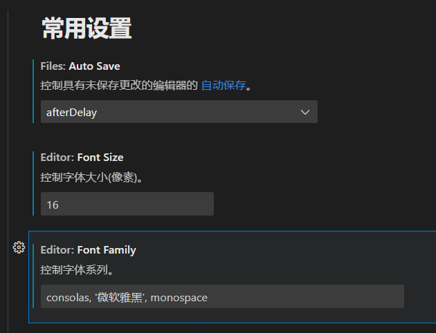</p><p data-lake-id="ufb13f24b" id="ufb13f24b"><br/></p><h3 data-lake-id="NO4dd" id="NO4dd"><span data-lake-id="u5ee5b792" id="u5ee5b792">修改文档注释格式</span></h3><p data-lake-id="u6f5b408f" id="u6f5b408f"><span data-lake-id="u9e7e517f" id="u9e7e517f">安装插件</span><code data-lake-id="ue2601023" id="ue2601023"><span data-lake-id="udc90c16f" id="udc90c16f">autodocstring</span></code></p><p data-lake-id="u2d59ce6d" id="u2d59ce6d"><span data-lake-id="u565b1ec2" id="u565b1ec2">打开插件</span><code data-lake-id="u2cb13cc1" id="u2cb13cc1"><span data-lake-id="u2c51186a" id="u2c51186a">autodocstring</span></code><span data-lake-id="u1f5ee964" id="u1f5ee964">设置，将</span><code data-lake-id="u56a3f402" id="u56a3f402"><span data-lake-id="uc4acc04e" id="uc4acc04e">Docstring Format</span></code><span data-lake-id="u50712e9d" id="u50712e9d">选项修改为</span><code data-lake-id="uce292d82" id="uce292d82"><span data-lake-id="u72732e21" id="u72732e21">sphinx-notypes</span></code></p><p data-lake-id="u887a2a4a" id="u887a2a4a">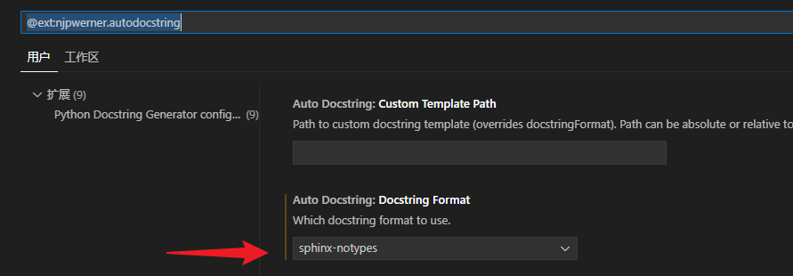</p>